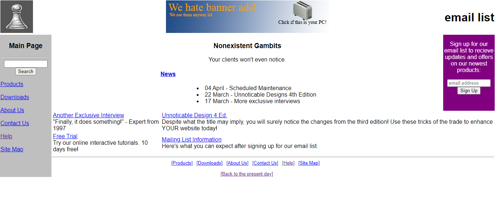
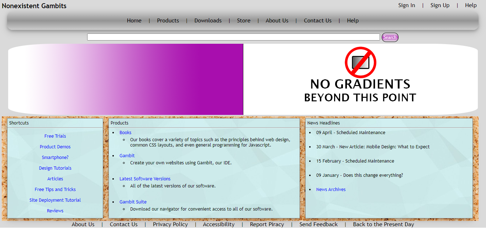

This timeline showcases the evolution of website UI design from 1991 to 2024. It also contains a prediction for how website UI designs will look in the future.
The pages of the website are for a fictional web design company named Nonexistent Gambits.
Each page is an example of a main page. Click on (or hover over where applicable) the "Help" links on each page for an explanation on the principles behind the page's design.
Click a year on the timeline to visit its page.
18 tags and no images
Images and tables now possible
Tables are now used to create the entire layout
(Pending overhaul)Layout still table-based

Last of table-based layouts
Not much change from '04 despite innovations. Beginning of <div>-based layouts

Some sites embedded Flash videos. An mp4 is used instead since Flash has been deprecated from browsers. Flat design begins
Responsive design on cutting edge. Videos gone from main page to respect data caps.
Responsive design more popular. Layouts are split into columns.
Responsive design is the de-facto standard. Flash is gone. Flat icons replace text. Slideshows are common on main pages.
Skeuomorphism makes a comeback. Kinetic typohraphy will become more common. Responsive design stays. New AI functionality.